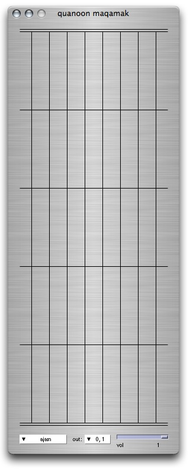

ixiQuarks : Quanoon

| Quanoon |
|
The Quanoon is an instrument inspired by the Arabic quanoon. It has 8 strings (a scale) that can be played by the Wacom-tablet (where pressure is mapped to amplitude). Each string is divided up into 5 octaves. The length of the note played is defined by where within the octave area of the string it is plucked. At the bottom it has long note, at the top it is short. The popupmenu on the left contains the main Arabic scales. Arabic music normally has 24 notes in the octave, thus using quarter-notes instead of the Western half-notes. The tuning is 24 tone equal tempered tuning. (24-TET). There is only one sound in the instrument, a string-like sound generated with Karplus-Strong synthesis. The strings can be strummed horizontally and vertically (where dragging the cursor down a string results in repeated plucking of the string). By pressing "p" you can get a plot-window showing the number of times you have played each string. |